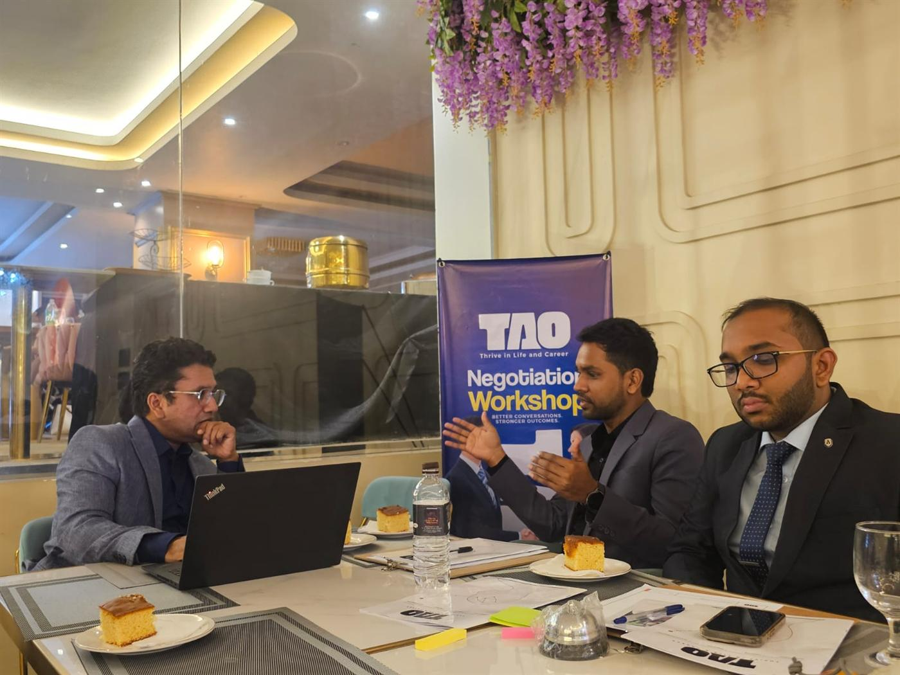

About TAO
Insight is useful only when it becomes behaviour.
TAO — Thrive in Life & Career — is a professional development institution focused on the human capabilities that shape how people work: communication, leadership, negotiation and influence.

Why TAO exists
Capable people are rarely taught the human half of their work.
Across professions, the same pattern repeats. People are recognised for technical skill, then find that the hardest parts of the job are human: explaining a decision, leading a team under pressure, negotiating with a partner, raising a problem before it grows. Most were never shown how.
Much professional training does not close that gap. It informs without changing behaviour — a set of slides, a few good ideas, and the same habits by Monday.
TAO was created to do the opposite: to design learning that people practise, reflect on and apply, so that it shows up in how they actually communicate, lead and negotiate.
The name
What Thrive in Life & Career means.
The capabilities TAO develops do not stop at the office door. The same skills that make someone effective at work shape how they live beyond it.
Thrive
Not survive, and not simply cope. To thrive is to be effective and at ease in the situations that matter — because you have prepared and practised for them.
In life
Listening, clarity, composure and the ability to handle disagreement shape relationships, confidence and wellbeing — not only performance reviews.
& Career
Careers advance on competence but are defined by how people communicate, lead, influence and collaborate. These skills decide who is trusted with more.
How we approach learning
Learn. Practise. Reflect. Apply.
Every TAO session follows the same four movements, because each one does something the others cannot.
- Learn — concise frameworks and models that make a situation easier to see clearly.
- Practise — simulations, role play and exercises, with candid feedback.
- Reflect — examining what happened, what worked and the habits behind it.
- Apply — specific commitments that participants take back to real work.
Why application matters
Knowing how a difficult conversation should go is not the same as being able to hold it. The gap between the two is closed only by practice.
People rarely fail in professional conversations because they lack information. They fail because, under pressure, they revert to habit. Practice in a safe setting — with feedback, and with the chance to try again — is what builds new habits that hold when it matters.
That is why TAO sessions are built around doing, and why every programme ends with application: specific behaviours, in specific situations, that participants commit to.
How the skills connect
From being understood to being trusted with more.
Communication
The foundation: how clearly people think, speak and listen — and whether they are understood.
Leadership
Communication with responsibility: aligning people around a direction and earning their commitment.
Negotiation
How people move forward when interests differ — without damaging the relationship.
Career growth
The result: people who can do all three are the people organisations trust with more.
Who TAO serves
For people whose work runs on other people.
TAO originates in Sri Lanka and works to an international standard — with professionals and organisations wherever the work is.
Professionals
Specialists and practitioners who want to communicate, influence and negotiate more effectively.
Emerging leaders
People stepping into responsibility for a team, a project or a client relationship.
Senior leaders
Leaders and leadership teams working on presence, influence and difficult decisions.
Organisations
Companies and HR teams building communication and leadership capability across their people.
NGOs & development organisations
Teams working across cultures, stakeholders and high-stakes negotiations.
Universities & associations
Educational institutions and professional bodies developing their members and staff.

The people
Credibility built on practice, not promises.
TAO is a young institution, and it says so. Its credibility rests on its philosophy, on the quality of its programmes and on the practitioners who lead them.
Didula Weerasekara — communication and leadership trainer, with more than nine years of teaching and training and a grounding in education and counselling psychology.
Harshadewa Amaratunga — international trainer, certified mediator and access negotiator, Rotary Peace Fellow, with a background in UN and humanitarian access negotiation.
Next step
See what TAO offers.
Programmes for individuals and organisations, each built on the same principle.